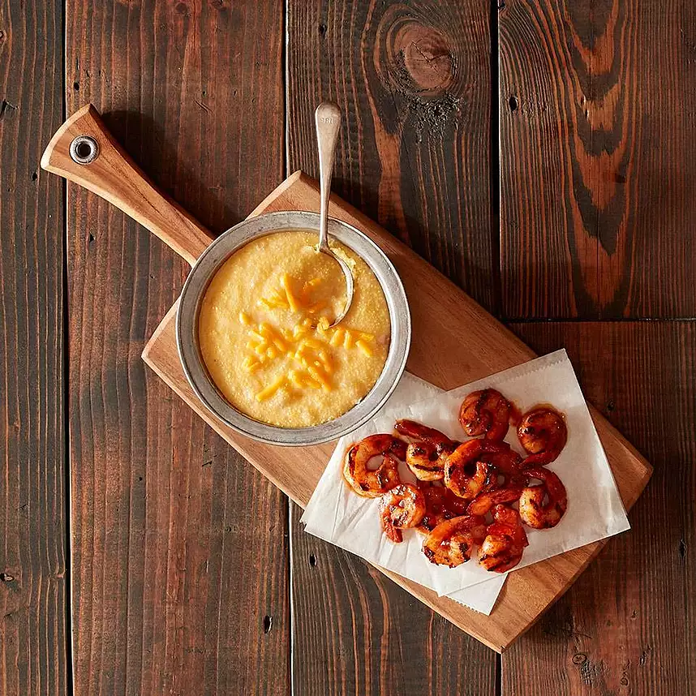

BBQ Shrimp and Grits

Luxurious Shrimp and Grits
Hearty, flavorful and warm is the best way to describe this classic dish.
Ingredients
- 4 tbsp olive oil, divided
- 1/2 yellow onion, diced
- 2 cups grits
- 6 cups water
- 1 cup shredded cheddar cheese
- 2 1/2 tsp salt
- 1/2 tsp ground black pepper
- 2 lb shrimp, peeled/deveined
- 1 tsp smoked paprika
- 2 tsp ground cumin
- 1/2 cup vinegar based Carolina style BBQ sauce
- Aluminum foil
Directions
- Preheat the grill to high heat
- Heat 1 tablespoon of olive oil in a large pot on medium-high heat. Add the onions and brown, about 6 to 8 minutes. Add in the grits and 6 cups of water and stir over medium-low heat until the grits have absorbed the water and are cooked through, about 20 to 25 minutes. Whisk the cheese into the grits and season with salt and pepper. Keep warm.
- Line the grill with Aluminum foil
- Combine the shrimp, paprika, cumin, and remaining 3 tablespoons of olive oil in a bowl and mix.
- Place the shrimp right onto the foil on the grill and cook for 3 to 4 minutes on each side or until browned and cooked throughout.
- Pour the BBQ sauce on top of the shrimp and mix.
- Serve shrimp with the cheesy grits.